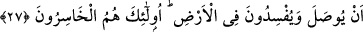

ona i’tirâzda bulunurlar. Onların bu sözlerini Cenâb-ı Hak şöyle cevaplandırır: Allah,
bu misâlle, mü’minlerden birçoğunu yola getirir. Çünkü mü’minler bunu tasdîk ederek
hidâyetleri artar.
Diğer bir ifâdeyle, Allah bu misâlle, kullarından sapıklığı seçecekleri ilm-i ilâhisinde
ma’lûm olanları saptıracağını, ilm-i ilâhisinde hidâyete yönelecekleri ma’lûm
bulunanları hidâyete erdireceğini açıklamaktadır.
“Idlâl”; bir şeyi haktan bâtıla, doğrudan yanlışa döndürmektir. Tek yaratıcı Allah
Teâlâ olması açısından “ıdlâl” (saptırma) işi O’na isnâd edilmiştir. Bununla beraber
kulların fiilleri, kesb cihetiyle kendilerine âiddir.
“Hidâyet üzere olanlar, azlık olduğu halde neden âyette çok olarak anlatılmaktadır?”
diye bir sual vârid olursa, derim ki: Ehl-i hidâyet kendi içlerinde çoktur. Ancak ehl-i
dalâlet ile kıyaslandıklarında azınlıktır. Aynı şekilde hidâyete ermiş az bir topluluk, sayı
itibariyle az olsa bile hakikatte çoktur. Çünkü onlar hak üzere, diğerleri ise bâtıl
üzeredir. Bâtıl ise yok hükmündedir.
İbn Mes’ûd (r.a.)’dan rivâyet edilmiştir ki: “En büyük topluluk, hak üzere olan tek
kişidir.”
Allah bu misâlle ancak kendisini inkâr eden ve emrinden çıkan fâsıkları saptırır. Fısk
lügatte çıkmak mânâsında, şerîatte ise “büyük günah işlemek sûretiyle Allah’ın
tâatından uzaklaşmak” anlamındadır. Küçük günahlarda ısrar etmek de büyük günahtır.
Fıskın üç derecesi vardır:
1- Benimsemeden gaflet ile günah işlemek,
2- Günaha dalmak,
3- Günah olduğunu bildiği halde, isteyerek kötülük yapmak.
Bu üçüncü derece küfür mertebelerinden biridir. Fâsık kimse, bu dereceye
ulaşmadıkça mü’min olmaktan çıkmaz. Çünkü kendisinde, îmânı gerekli kılan tasdîk
mevcûddur.
27. Onlar öyle (fâsıklar) ki, kesin söz verdikten sonra sözlerinden dönerler.
Allah’ın, ziyâret edilip hâl ve hatırının sorulmasını istediği kimseleri ziyâretten
vazgeçerler. Ve yeryüzünde fitne ve fesâd çıkarırlar. İşte onlar gerçekten zarara
uğrayanlardır.
“Nakz”; feshetme ve bir terkîbi çözmek, ayırmak demektir. “Peki, bu mânâya gelen
nakzetmek kelimesinin ahdi iptal etmede kullanılması nasıl mümkün olur?” diye
sorulacak olursa derim ki: Araplar, ahid yapanlar arasında birleşmeyi sağlaması
bakımından ahde, istiâre yoluyla “ip” derlerdi. Bu yüzden Cenâb-ı Hak, yapılan